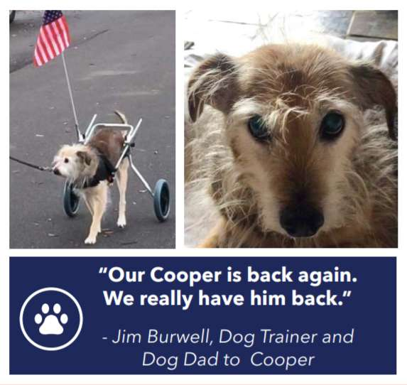

Jump to: Cooper's results after trying CBD
Jim Burwell is an established dog trainer from Houston, Texas with over 35 years in the business. His terrier mix, Cooper was rescued and adopted in 2006. At the time, Jim's veterinarian estimated Cooper to be five or six years old. Amazingly, Cooper is still going strong at 20+ years of age!
From the very first moment Jim and his wife Leila adopted Cooper, they knew he was a special kind of pup.
But Cooper had experienced a tough start in life. As a rescue, he was found dragging one of his back legs, a sure sign he'd been involved in an accident. Sadly, the leg couldn't be saved so Jim and Leila's vet decided to remove it.
"We had quite a bit of rehabilitation to do with him when we first adopted him into the family," recalls Jim.
But Cooper bounced back from his surgery surprisingly quickly and adapted to life as a three-legged dog. It was only as he started to advance in years that his missing back leg began causing him problems.
As Cooper began to age, only having one back leg, he developed mobility and joint issues. He'd get calcium deposits in between the vertebrae of his back which severely limited his mobility," Jim says.
One day, while browsing Facebook, Leila stumbled upon a review of Honest Paws. Straight away, she knew that this was the solution they'd been searching for. Jim and Leila were no strangers to CBD. They'd been taking it themselves (in oil form) for their own aches, and they were very impressed with the results!
Relief from aches and discomfort. Enhanced mobility for older dogs. Healthier cartilage and joints.
Get Relief CBD BitesHaving tried CBD themselves, they were confident that it would make a huge difference to Cooper's quality of life.
CBD bites for dogs were new to them — but they were excited to give it a try. So, they ordered a bag of Honest Paws Relief CBD Bites and started giving it to Cooper daily.
After just a few days using Honest Paws Relief CBD Bites, Jim and Leila noticed some big changes in Cooper. "The results were surprisingly quick," remembers Jim. "We noticed much better engagement with us around the house on a regular, daily basis. It's almost like we could tell that Cooper felt relieved. He was 'back in the game', so to speak."
As time went on, Jim and Leila were astounded by the changes they saw in Cooper. "We could tell that he felt so much better," says Jim.
Relief from aches and discomfort. Enhanced mobility for older dogs. Healthier cartilage and joints.
Get Relief CBD BitesSoon, Cooper's discomfort was all but gone. Jim and Leila also noticed that he seemed calmer, happier, and more content. Delighted with the results, the couple continued to use Honest Paws products daily. "We use the bites for Cooper and we have jars of Honest Paws peanut butter, too," explains Jim. "We even give the peanut butter to our five-year-old black lab to keep him calm at night."
Fast forward to today, and Cooper has been taking Honest Paws Relief CBD Bites for more than three months.
If you are interested in achieving the same results as Cooper, for your dog, shop Honest Paws Relief CBD today!